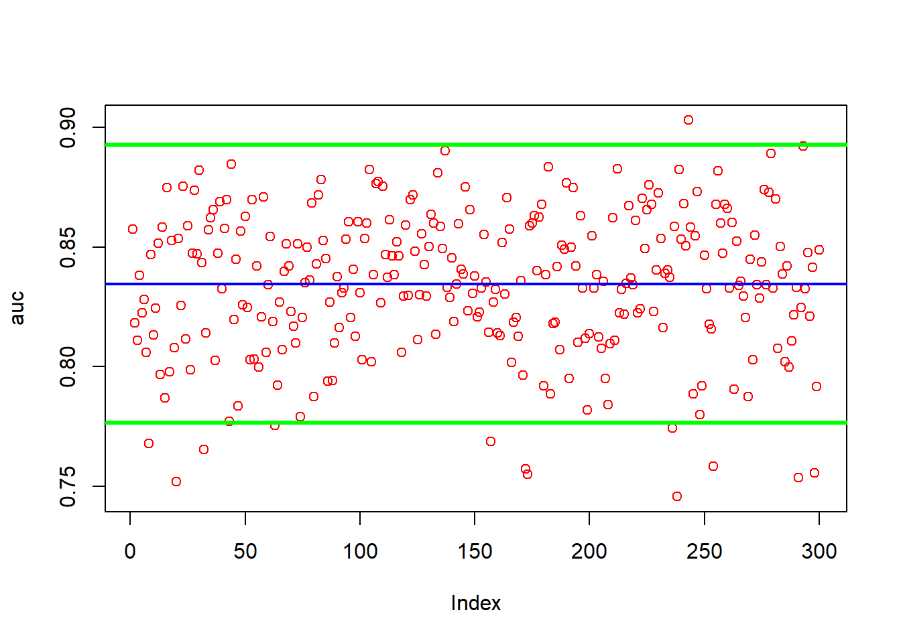
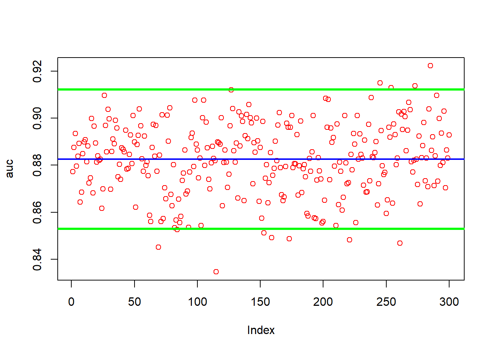

Titanic LM, CART, and RF
titanic rf lm and cart
Data Prep
Download the Data
train_titanic <- read.csv("train.csv")the columns i will use are y (Survived), Pclass, Sex, Age, SibSp, Parch, Fare, Emarked as they are the easiest to work with. other possibilities include using the titles for names
library(dplyr)
data <- train_titanic[ ,c(2, 3, 5, 6, 7, 8, 10, 12)]
data <- data %>% rename(y = Survived)
data$y <- factor(data$y)Convert the characters to factors.
char_cols <- sapply(data, is.character)
data[, char_cols] <- lapply(data[, char_cols], factor)We have NAs we need to deal with
colSums(is.na(data))## y Pclass Sex Age SibSp Parch Fare Embarked
## 0 0 0 177 0 0 0 0Firsts i am going to predict the NAs for Age with a simple Random Forest model.
na_index <- which(is.na(data$Age))#index the missing NAs
na_data <- data[na_index, ]#create a data frame of the NAs indexed
c_data <-data[-na_index, ]#take the complete data to c_data
na_data <- na_data[, -which(names(data) == "Age")] # take out the collum that only has NAs in iti will use na.roughfix() for the two missing Embarked values
library(randomForest)
c_data <- na.roughfix(c_data)# there are two NAs in embarked
na_data <- na.roughfix(na_data)Predict our NAs
library(randomForest)
model_rf <- randomForest(Age ~.,
ntree = 1200,
data = c_data)
pred_na <- predict(model_rf, na_data)Bind our predictions to the corresponding index number for each missing NA in “data”
na_n_ind <- cbind(pred_na, na_index)
data$Age[na_n_ind[, 2]] <- na_n_ind[, 1]finnaly just use na.roughfix() for the two embarked values since it is so little
library(randomForest)
data <- na.roughfix(data)
colSums(is.na(data))## y Pclass Sex Age SibSp Parch Fare Embarked
## 0 0 0 0 0 0 0 0Now do the same for our test set
str(data)## 'data.frame': 891 obs. of 8 variables:
## $ y : Factor w/ 2 levels "0","1": 1 2 2 2 1 1 1 1 2 2 ...
## $ Pclass : int 3 1 3 1 3 3 1 3 3 2 ...
## $ Sex : Factor w/ 2 levels "female","male": 2 1 1 1 2 2 2 2 1 1 ...
## $ Age : num 22 38 26 35 35 ...
## $ SibSp : int 1 1 0 1 0 0 0 3 0 1 ...
## $ Parch : int 0 0 0 0 0 0 0 1 2 0 ...
## $ Fare : num 7.25 71.28 7.92 53.1 8.05 ...
## $ Embarked: Factor w/ 4 levels "","C","Q","S": 4 2 4 4 4 3 4 4 4 2 ...linear Model
Y has to be numeric for lm. also i am facing a issue where for some of the splits not all factor levels from embarked are being selected which will produce a error. since lm is more of a basline i will simply remove embarked. i know that glm exists but i prefer lm as a basline.
data_lm <- data
data_lm$y <- as.numeric(data_lm$y)
data_lm$y <- data_lm$y - 1 # bring it back to 1 and 0s
data_lm <- data_lm[, -which(colnames(data_lm) == "Embarked")]library(foreach)
library(doParallel)## Warning: package 'doParallel' was built under R version 4.2.3## Loading required package: iterators## Loading required package: paralleln <- 33
obs <- nrow(data_lm) # observations
trials <- 1:3
numCores <- detectCores()-1
cl <- makeCluster(numCores)
registerDoParallel(cl)
lst <- foreach(k=trials, .packages = c("ROCR")) %dopar% {
auc <- c()
for (i in 1:n){
idx <- sample(obs, obs, replace = TRUE)
train <- data_lm[idx,]
test <- data_lm[-idx, ]
model <- lm(y ~ ., data = train)
phat <- predict(model, test)
pred_rocr <- prediction(phat, test$y)
auc_ROCR <- performance(pred_rocr, measure = "auc")
auc[i] <- auc_ROCR@y.values[[1]]
}
return(auc)
}
stopCluster(cl)
# combine the results
auc <- unlist(lst)
mean(auc)## [1] 0.8580565sd(auc)## [1] 0.01966225# plot auc and mean
plot(auc, col="red")
abline(a = mean(auc), b = 0, col = "blue", lwd = 2)
abline(a = mean(auc)-1.96*sd(auc), b = 0, col = "green", lwd = 3)
abline(a = mean(auc)+1.96*sd(auc), b = 0, col = "green", lwd = 3)
CART
This is using default params but once again it is mearly a baseline to examine
library(rpart)
library(ROCR)
library(foreach)
library(doParallel)
n <- 33
obs <- nrow(data) # observations
trials <- 1:3
numCores <- detectCores()-1
cl <- makeCluster(numCores)
registerDoParallel(cl)
lst <- foreach(k=trials, .packages = c("rpart", "ROCR")) %dopar% {
auc <- c()
for (i in 1:n){
idx <- sample(obs, obs, replace = TRUE)
train <- data[idx,]
test <- data[-idx, ]
model <- rpart(y ~ ., data = train, method = "class")
phat <- predict(model, test, type = "prob")[,2]
pred_rocr <- prediction(phat, test$y)
auc_ROCR <- performance(pred_rocr, measure = "auc")
auc[i] <- auc_ROCR@y.values[[1]]
}
return(auc)
}
stopCluster(cl)
# combine the results
auc <- unlist(lst)
mean(auc)## [1] 0.8342675sd(auc)## [1] 0.02845318# plot auc and mean
plot(auc, col="red")
abline(a = mean(auc), b = 0, col = "blue", lwd = 2)
abline(a = mean(auc)-1.96*sd(auc), b = 0, col = "green", lwd = 3)
abline(a = mean(auc)+1.96*sd(auc), b = 0, col = "green", lwd = 3)
Random Forest
This is a Random Forest Algorithm that uses Parallel processing. In the loop ntree is set to B. I use Bootstrapping data samples instead of k-fold-cross-validation as it is more robust and lets me reproduce the model as many times as i like.
library(randomForest)
library(ROCR)
library(foreach)
library(doParallel)
B <- 1200
n <- 33
obs <- nrow(data) # observations
trials <- 1:3
numCores <- detectCores()-1
cl <- makeCluster(numCores)
registerDoParallel(cl)
lst <- foreach(k=trials, .packages = c("randomForest", "ROCR")) %dopar% {
auc <- c()
for (i in 1:n){
idx <- sample(obs, obs, replace = TRUE)
train <- data[idx,]
test <- data[-idx, ]
model <- randomForest(y ~ ., ntree = B, data = train)
phat <- predict(model, test, type = "prob")
pred_rocr <- prediction(phat[,2], test$y)
auc_ROCR <- performance(pred_rocr, measure = "auc")
auc[i] <- auc_ROCR@y.values[[1]]
}
return(auc)
}
stopCluster(cl)
# combine the results
auc <- unlist(lst)
mean(auc)## [1] 0.8824746sd(auc)## [1] 0.01507514# plot auc and mean
plot(auc, col="red")
abline(a = mean(auc), b = 0, col = "blue", lwd = 2)
abline(a = mean(auc)-1.96*sd(auc), b = 0, col = "green", lwd = 3)
abline(a = mean(auc)+1.96*sd(auc), b = 0, col = "green", lwd = 3)